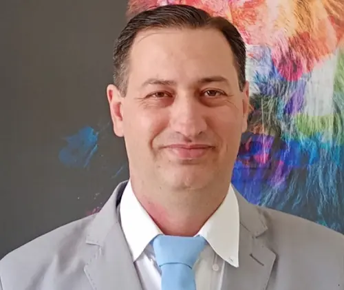

Home
About Me
I am Edi Carlos. I am from Brazil, and I live in Votorantim City, Sao Paulo state. I am marriage, me and my wife have four childreen (one is already in Heaven). In this moment, I work as teacher in a public school, and I am studying and doing projects to get job oportunities as developer. I have worked for over twenty years as IT support in a supermarket, and recently I started working in software Industry (I had six month working as fullstack in Microsot .net tecnology). I did System Analysis and Development in Fatec College. Fatec is the College of Tecnology of the Sao Paulo State. I have started studing Software Development in BYU (and I am so happy doing it).
Student Photo

WEb Certificate Courses
The total credits for course listed above is 6